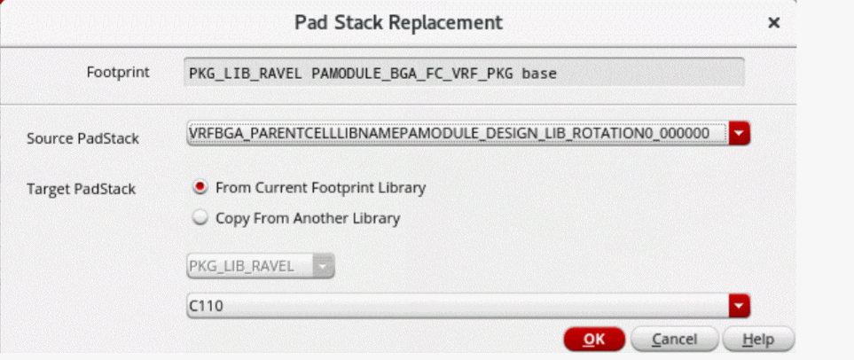

Replacing Pads
When creating a die abstract by exporting a die in Virtuoso Studio, the pads are created based on the IC layout shapes. However, these pads do not represent soldering at assembly level. It is necessary to replace these pads by the real pads at the package-design level, either in Virtuoso Multi-Technology or Allegro platform.
Before recreating pad stacks, it is recommended to review the shrink factor of the die. When a die has a shrink factor, the pads are also shrunk with the die size. However, the pads used for replacement exist in their manufacturing size. Applying the shrink factor to these pads leads to smaller pads than expected. Therefore, apply the shrink factor to padstacks only if they are on a die stack layer. If they are on a substrate layer, do not apply the shrink factor.
You can replace a padstack cell in a footprint with another padstack cell from the same or another library.
-
Click Module – Replace PadStack to open the Pad Stack Replacement form.
 - In the Source PadStack drop-down list, select the padstack cell to be replaced.
- Select from the From Current Footprint Library or Copy From Another Library check boxes to specify the target padstack cell.
-
Click OK.
The padstacks are replaced in the footprint of the selected instance. If Copy From Another Library is selected, the padstack cell is also copied to the footprint library.
Related Topics
Return to top